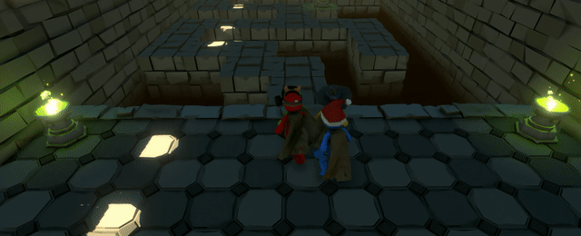

How to create a game that involves with limited vision, but diminish the
negative connotation of being horror-themed?
Conceptualization
Inspired by my favorite party games:
Pummel Party
and
Super Mario Party, you have to compete against your friends in a variety of mini games,
where you must complete a bunch of absurd objectives.

One of the mini games "Mystery Maze" in Pummel Party where players
must memorise the route before it disappears.
Development
Outcome
Reflection
What I liked about this prototype:
The objectives are fun and interactive, and each mini games usually
only last for a few minutes.
Since you are playing with friends, you will feel more comfortable
being in the dark.
Issues/future development:
How to extend this experience into a longer period of time? Maybe
make a cooperative game where friends have to solve puzzles by
working together.
Maybe create an escape room that focuses more on cooperation and
working with friends instead of fear and horror.